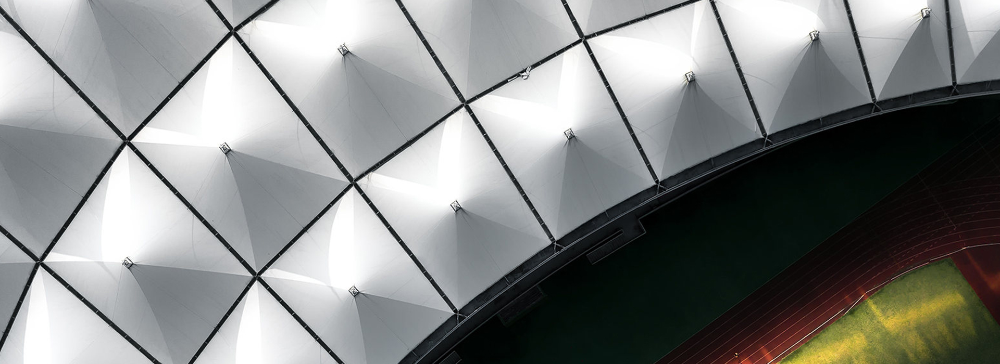
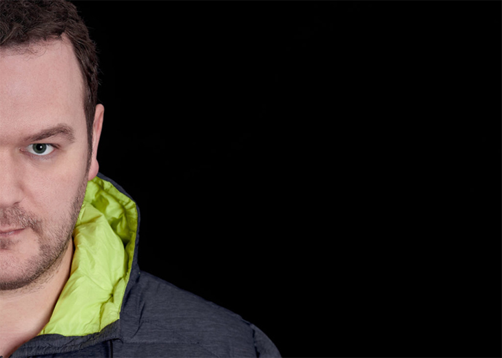
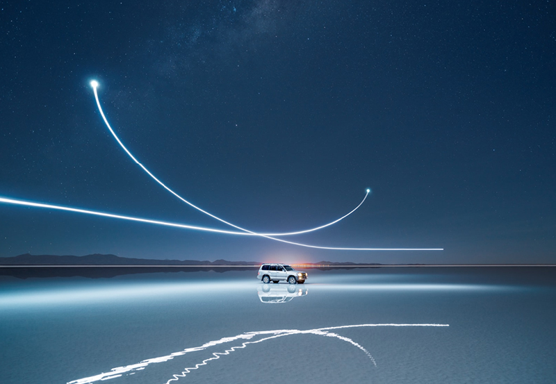

保罗·里弗（Paul Reiffer）
Phase One是一家怀着满腔热情致力于为突破下一个成像技术而不懈努力的企业。正如Phase One从未止步于现有的发现和发明一样，我们精心挑选的Phase One大使，也从未止步于他们在艺术和探索道路上已获得的成就。 他们探索常人无法想象的地方，捕捉难以解释却感受强烈的情感，创作出魔幻又真实的作品。他们具有无尽的好奇心、无穷的想象力和对图像质量有无限的执着等美好品质。
